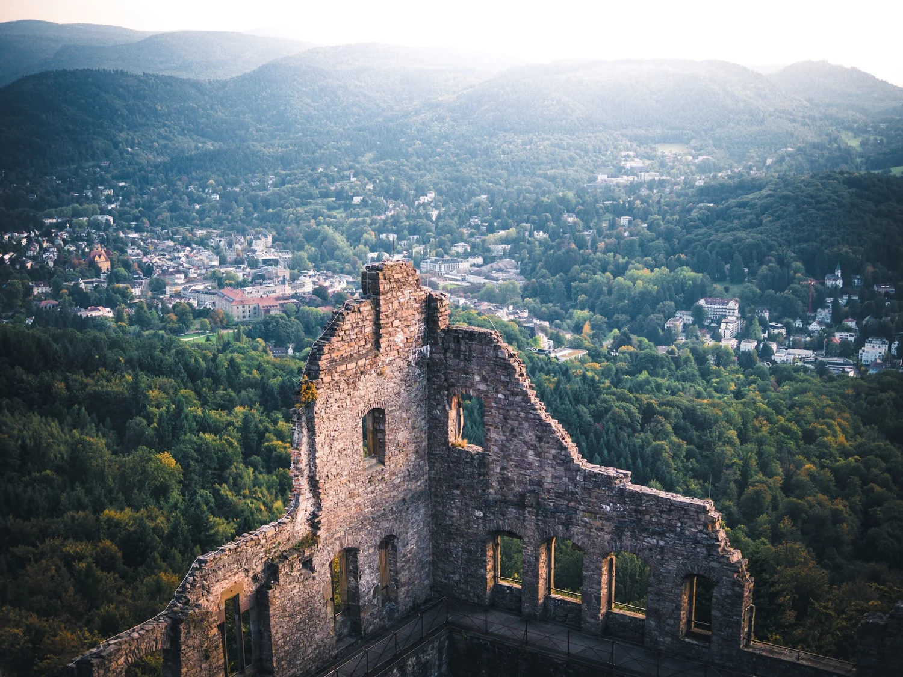
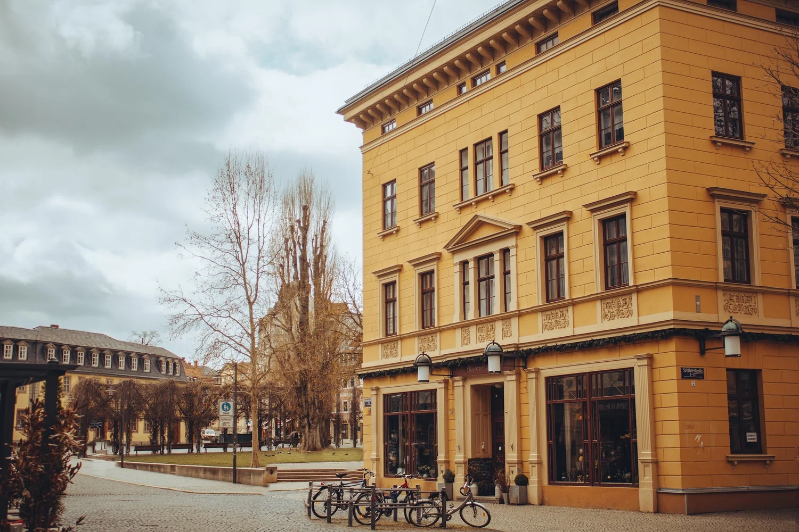
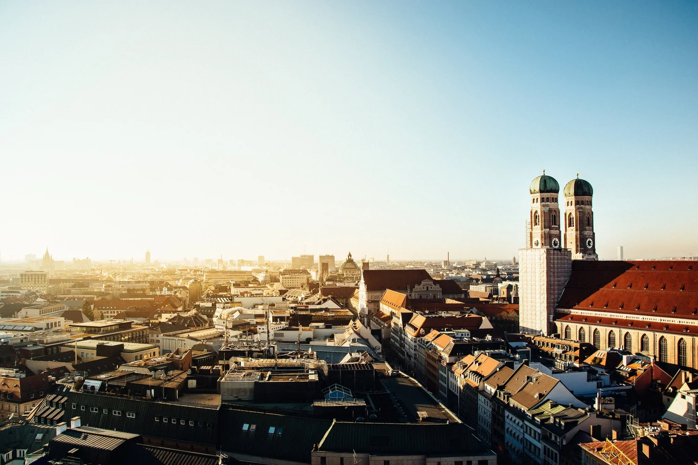
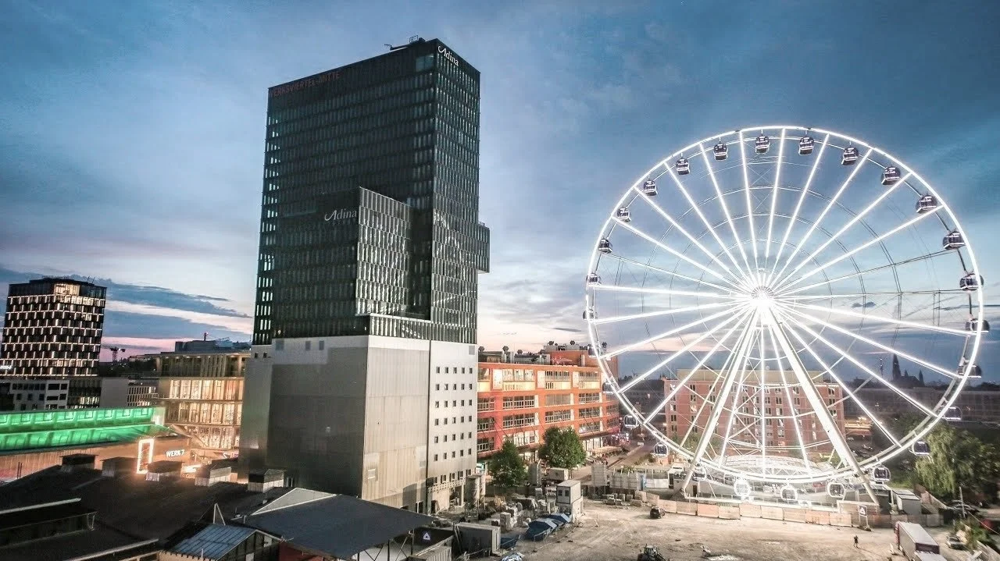

I grew up in a small village right at the edge of the Black Forest. My early childhood was characterized by nature and freedom.
When growing older I got more and more drawn to my computer, my Nintendo and my Game Boy. Gaming was going to be the hobby I dedicated the most time to.
After school, trying to find the right fit for me, I first studied a year of Computer Science in Karlsruhe, quit, and studied another year of Philosophy in Freiburg.
Still living at home with my parents, I figured I had to move out to break out of my routines and make this work for me.

Wanting to study something less theoretical, I decided to move to Weimar and study civil engineering.
In between construction-related lectures I also learned to write my first code in Java.
I got to learn a lot about sustainability, which sticks with me today, especially since I chose to specialize in environmental engineering for my last two semesters.
I was still fascinated by games and what they can teach us without us noticing. Luckily I had the opportunity to write my bachelor's thesis on “Opportunities and challenges for the use of serious games in urban water management”, which even ended up being published as a scientific paper in a shorter form in cooperation with my professor.
Writing that thesis sparked my interest in gamification and game design.
But my biggest luck was to meet my lovely wife in Weimar while she finished her master's degree in architecture.

I decided to pursue my master's degree in Munich because I was able to choose “Computation in Engineering” as one of my specializations, and I was eager to learn more about coding.
Throughout the semesters I learned C++, C#, Python and SQL. Additionally I visited lectures about game design and game development, where I learned to use Unity, one of the most popular game engines.
With that new skill set I was ready to build upon my bachelor's thesis and build a game about sustainable construction for my master's thesis.
While studying at university I was fortunate to find a job as a working student at b.telligent, my first serious job. I started out in IT support where I learned much about Microsoft's cloud solutions like Teams, SharePoint and Exchange.
Soon I switched jobs internally into consulting and worked on in-house projects, where I could learn more about the Power Platform. As I hit more limitations I started to expand into Azure, where I was able to code again.

After finishing my master's degree I got married to my wonderful wife and started as a full-time consultant at b.telligent. I picked up where I left off and worked on multiple in-house projects using Azure, Power Platform and Microsoft 365, while supporting our IT department with SharePoint and Teams administration.
Half a year later my daughter was born and our lives changed significantly. I was already interested in self-development, but with now almost no free time left, I knew I had to improve myself if I wanted to keep growing.
After another two years working full-time as a consultant, improving myself and spending time with my family, I decided to switch it up and move out of consultancy. Around the same time my son was born.
I found a new job at Mitsui Rail Capital Europe, where I had the opportunity not only to work with Power Platform and Azure again, but also to get into agile work. To improve our productivity in the department I organized team workshops to work on our goals. To track these I also led the team to a Scrum-like process to improve transparency and productivity.
